Cell Creation:
Now to create a cell ... (NOTE will need to have imported the padstacks from the
ODA central library)
For this tutorial we will use a datasheet from a small chip so this tutorial will have a more realistic feel.
Use the following link to obtain the chip datasheet from which we will create a cell.
To start off you will need to load up the Library Manager. Once the library manager is loaded you can click on Cell Editor as shown below
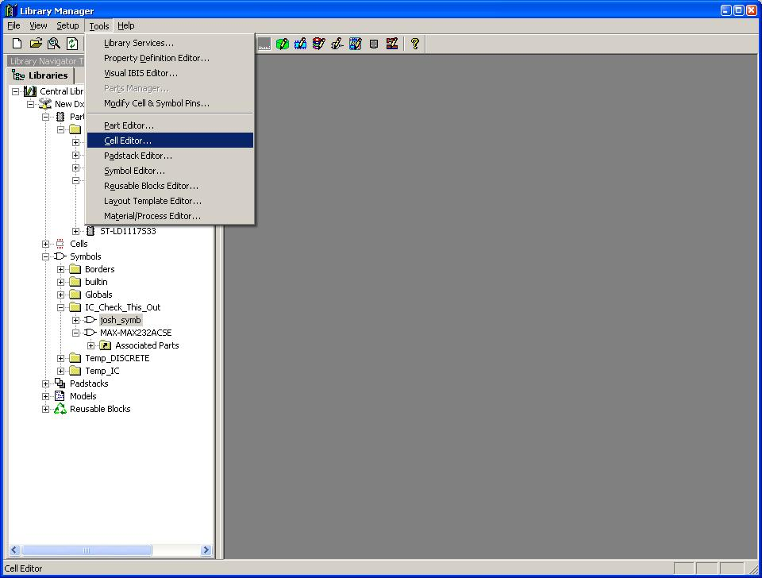
(1-invoke_cell_editor)
If you have a central library with no Cells then the next picture will look like the following picture.
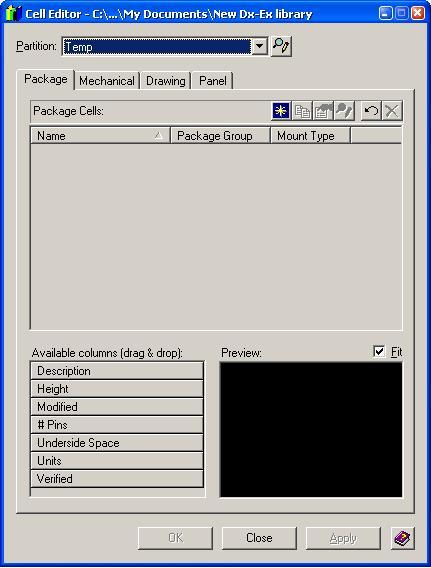
(2-Cell_Editor)
The top drop-down menu is the partition selection box. When you have many partitions of cells within your library you will only be able to observe cells within 1 partition at a time. If you want to edit two cells in two different partitions you will need to use that box.
Sidenote: if you want to modify how your cell partitions are you may click on the small button to the right side of the drop-down menu to edit the cell partitions.
Now, make sure that you are on the Package Tab of the cell editor and click the little small blue button with a yellow star in the center that looks like the following
(3-new cell button)
Now a new window should pop up. This is the cell creation wizard designed to make creating a cell easier.
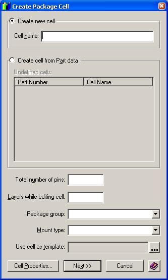
(4-new cell wizard)
Taking a look at the datasheet for the MAX 3314 we can see that we will be creating an 8-pin SOIC, so in the total number of pins field put 8 and in the Package group use the drop-down menu and find SOIC.
Make sure to name your cell and to specify the number of layers to be 2. The reason we need two layers is because there is a top and there will be a bottom. You will not need to use the bottom layer for this tutorial, but you must still specify that layer anyway. Now click the "Cell Properties" button on the lower left hand corner to open the following image:
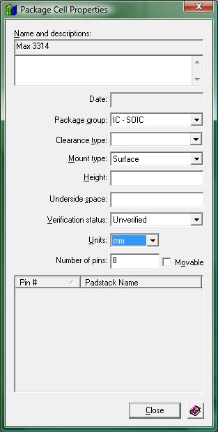
(4_1-cell_properties_window.JPG)Click the "close" button on the cell properties window, then press the "ok" button on the create new package window and now two new windows will appear, the window with the focus will be the "Place Pins" window:
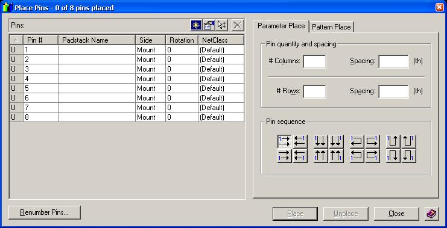
(5-Place pins)
On the left side of the window are your unidentified pins and on the right side of the window are two tabs. The "Parameter Place" tab will place your pins according to rows and columns you specify. IGNORE THIS TAB! The next tab --- "Pattern Place" --- is the tab you should be looking at. Click on that tab and then click on the drop-down menu to find the SOIC option as in the following picture.
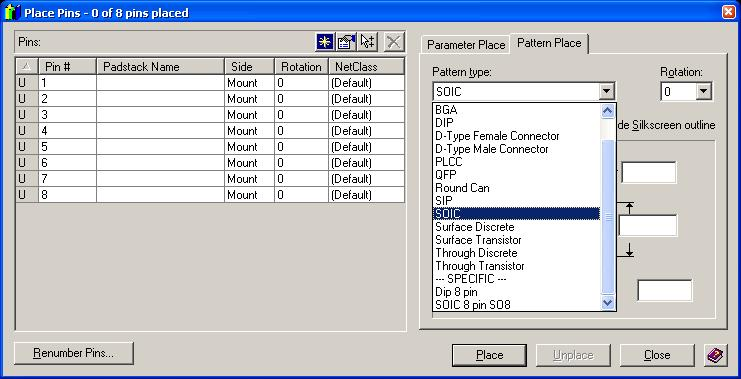
(6-pattern Place)
The reason to use the pattern place option is that the pins will be placed according to the standard pin numbering for that package. Pin numbering is extremely important .... it must perfectly match the package or your connections won't go to the pins that you think!
Your window should look like this now:
(7-SOIC pattern)
There are four parameters you will need to specify to this tool in order for it to create the cell. Remember that if your cell is not created with precision your chip will not fit your board. Once your board has been fabricated, component fitting problems are not so easy to fix. Often they result in ugly wiring patches. So, be careful here.
The last page of the MAX3314 datasheet has the dimensions of the actual chip package. Use this page to fill in the 4 blank fields. !!!NOTE!!!!: this cell creation wizard uses milimeters for its measurements. You must make sure to input the correct value from the datasheet. Most datasheets will either be in millimeters or in inches. Always make sure you check this. Lucky for you, the datasheet I provided for this exercise has both values. However you may find that datasheets for your parts do not specify which units they are using. DO NOT ASSUME!!! If you cannot find out what units the datasheet uses, call the company and have them tell you. Or, choose an equivalent part from another vendor that documents their packages a bit more carefully.
You should find that you will be using the fields (from the datasheet I provided) "E", "H", "e", and "D". Please note that these particular symbols are not standard across the industry. Always check your vendor's datasheet.
The added difficulty on this particular datasheet is that there are minimum values and maximum values. So which do you use?!? Well, I am about to provide you with several formulas that are designed to work across the whole ranges, providing all the information you need. I will provide five formulas, but only four formulas are below. I will introduce the last formula in just a second and they are as follows:
| Center pad to center pad: | E(min) + 2 L(max) |
| Pitch (distance between adjacent pins) : | e |
| Length of Cell: | D(max) |
| Width of Cell: | E(min) - 0.2mm ( 0.2mm is subtracted because we do not want the silkscreen outline to overlap any of the pads.) |
!!!NOTE!!!: Though these formulas should be used for all SOIC cells you will be making, the symbols representing each of the dimensions may not remain the same.
The following image shows approximately the results you should have for the example MAX3314 cell we are building.
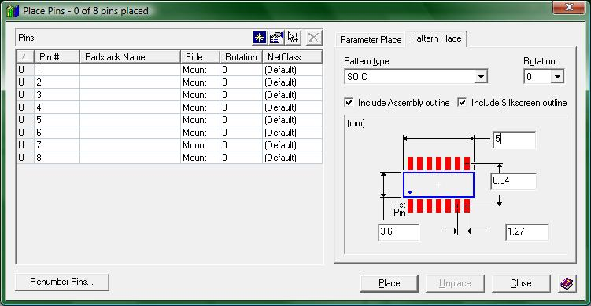
(8-SOIC pattern values)
Now to deal with the left side of the cell creation wizard
The following link to an image has been taken from OPTIMUM DxExp Library: Land Pattern Specification Sheet.
Use this link to view/download the image
This sheet will help you understand the naming scheme for the padstacks located in the ODA library.
In this case we will be looking for a padstack starting with “SR” ("S" for surface-mount technology and "R" for rectangular shape) and then followed by the dimensions of the rectangle. In this case the last formula to remember is that the rectangular land pattern shape for a SOIC should be 2x the max length of the pad on the package, and 1x the max width of the pad.
You should have gotten the dimensions of 2.54 mm and 0.49 mm. The closest padstack to that size is the 255x50 (Note the assumed position of the invisible decimal points). It is always better to have a pad that is slightly larger than the pin so always make sure to choose the larger pad if you must choose between two.
Use the drop down menus for each of the pins and select the "SR255X050" padstack. This is the surface-mount rectangular pad with dimensions 2.55mm by 0.50mm. Because all of the pins will use the same pad, you may select multiple fields together by holding shift, selecting all of the fields and then, while still holding shift, select the padstack through the drop-down menu. Your pin placement window should look like the following when you are ready to move on.
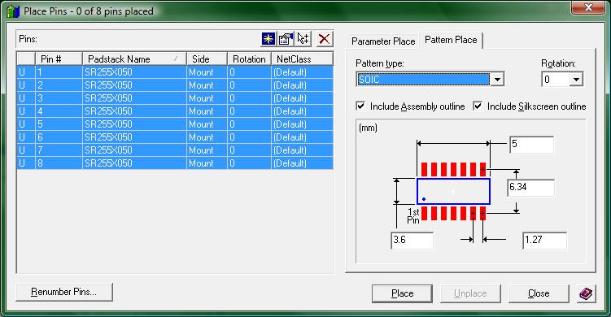
(10-place pins wizard final)
Now click the "Place" button and let the wizard create your Cell.
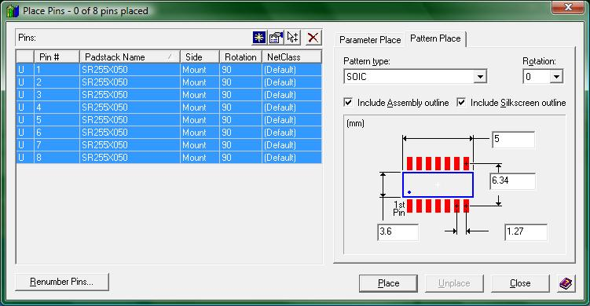
Now, click the "Place" buttton and the following should be the result of your pin placement
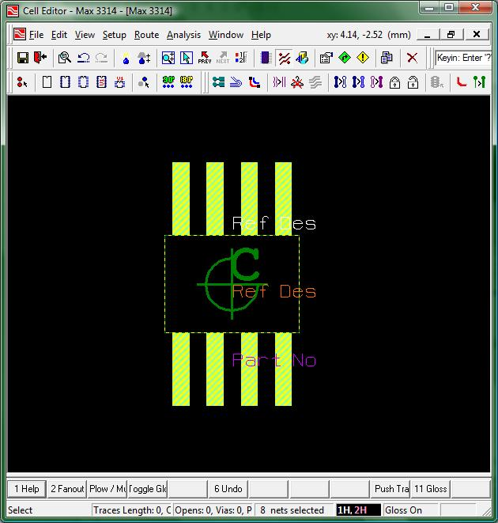
(11- Cell layout)

Now we will need to modify the REF-DES fields and Part Number fields to be more presentable. This can be done by going into "draw" mode. To get into "draw" mode click the button located on the toolbar at the top of the screen that looks like the following image.
(12-draw-mode button)
Once in this mode you should be able to select and move the REF-DES fields and Part Number Fields. My recommendation is to have the REF-DES fields on the sides of the footprint and then to place the Part Number Fields either on the sides of the footprint as well, or place them within the footprint. The reasoning is that when the board has been fabricated and assembled, the chip will sit on top of the footprint you have just designed. You will need to know which chips are which. The reference designator will be your key because it appears on the silkscreen.
Now back to business. When you double click the REF-DES or Part Number fields you will notice that the properties window appears. If it does not, click the following button to enable the properties window.
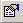
(13- properties button)
Use this "Properties" window to see and make changes in the various properties of the selected object. Note that there are two REF-DES fields, each containing the cell's reference designator but each presenting it on a different layer and in a different location. One is the "Silkscreen reference designator" and the other is the "Assembly reference designator". You can tell which is which by selecting one of them and noting the Type field. You can make changes within this window. For example, you can make the text a different size or even have it drawn in a different font. It is HIGHLY RECOMMENDED that you do all of your REF-DES and Part Number fields in Gerber-compatible fonts in order that your fields will correctly appear on the fabricated board!
By using the following button, you will be able to change the visibility of objects in your cell. Currently, you should not be able to see the "Part No." field, so click the button that looks like this.
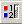
(14-display control button)
The window that appears will look like the following.
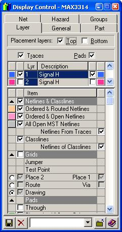
(15-Display control window)
In order to see the part number field you will need to scroll down to the section for Assembly Items. The check boxes on the left indicate which fields are displayed, and the boxes unchecked indicate fields not displayed. Play around with this display control window if you wish to customize what fields are displayed.
I recommend that you create all your parts in the same fashion. That way
all of them will be right, or wrong, in the same way. In addition
to moving around the Ref_des and part number fields, you will also need
to add a pin #1 indicator. This is absolutely necessary to ensure
that the assembler doesn't solder your chip on backwards. For
surface mount chips, a small circle, or dot, close to pin #1 is the
usual indicator. For through-hole parts, a square pin one is the
usual indicator, though using a small circle or dot nearby works as well.
After moving around the Ref_des and Part Number fields and adding
the pin #1 indicator, your part should
look like the following:
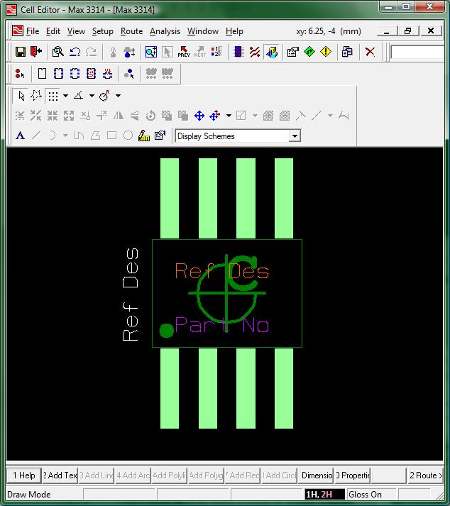
(16-recommended_layout.jpg)
I oriented the various parts of the new cell (as seen in the previous image)
for the following reasons:
{kind=link}